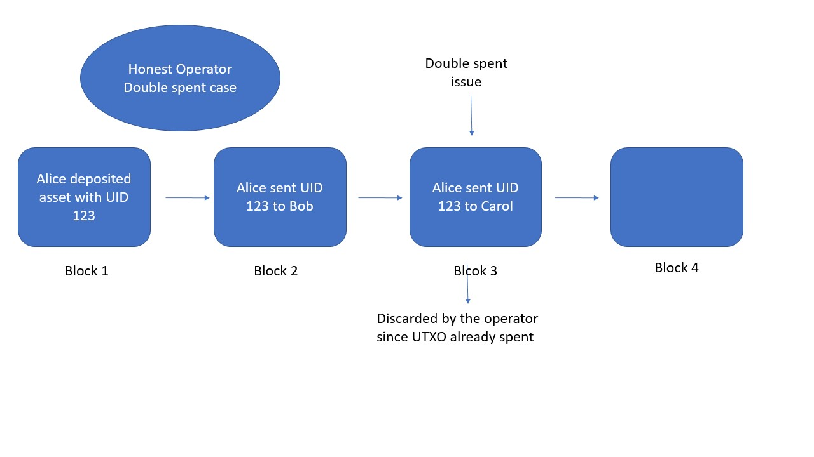
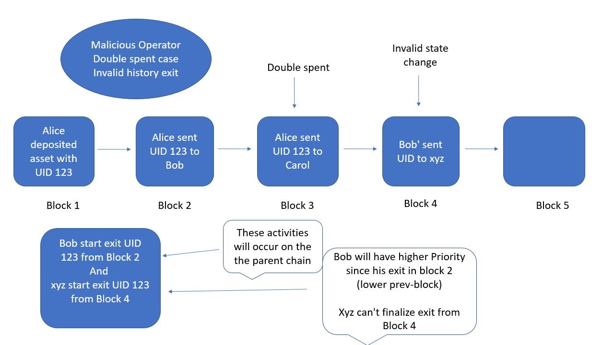

Plasma-Cash Documentation
Problem with current solution (blockchain)
Blockchain gives us a reliable, trust-less secure system with no central governance. Although having such capabilities people,
organizations do not prefer to use blockchain. There are two primary reasons that privacy and scalability. Since all blockchain
data is publicly available, one can use blockchain analysis to get knowledge of linked public address and who transferring what
to whom. The second reason scalability is a critical issue with any blockchain, currently, they handle [3-30] transaction per
second which is no-where near to mainstream centralized payment systems.
Proposed Solution
Since privacy and scalability, both are major and widely known concern in the blockchain community, all are trying to solve it
in their own way. Joseph Poon & Vitalik Buterin came up with the idea of side-chain(plasma) or say layer 2 blockchains. The
plasma framework is a smart contract that will be deployed by the operator on the ethereum main-chain(parent-chain). It is a
smart contract having some functionality such as deposit, challenge, exit, Merkle proof, etc. Here is the key point, plasma
side-chain not entitled to create or burn any token or coin or asset. The deposit function of the smart contract will transfer
the main-chain asset to side-chain and the exit function of the smart contract will be responsible for transferring back
(child-chain to parent-chain). In between of deposit and exit event assets can be transferred any number of times anyone on the
child-chain. Rules for transfer will depend on the side-chain and also handled by the child-chain client/operator. The plasma
child-chain build on the top of parent-chain in a way that whenever it will create a block in it's block-chain, it must have to
add Merkle root of that block in its smart-contract on the parent-chain otherwise that block will be invalid. The plasma framework
will solve the privacy problem since no transactional data history will be added on the public parent blockchain. And it is using
Proof of Authority consensus so that it is far better scalable in term of transaction per seconds will all benefits of blockchain
technology.
Elaborate Plasma Framework
Since the idea of plasma side-chain came up, whole ethereum community working on improvements so that today multiple designs of
plasma framework exits such as Plasma-MVP, Plasma-MoreVP, Plasma-Cash. Each also has multiple version with slightly different
use-cases.
Example - In plasma-MVP user have to sign transaction when it makes a transfer and again it got confirmed, so basically for a
single successful transfer user have to sign it two times. In plasma-cash user need to sign only once for a transaction but each
token either NFT or Non-NFT both will behave like NFT.
Currently, I'm using plasma-cash framework and top of it building a user-interface.
The plasma-cash is a smart contract deployed on the parent-chain, so either the plasma-cash client or any user will make an
operation on the smart contract such as deposit, exit, challenge, submit_block, etc. The smart contract emits an event for the
same respectively. These events are public so anyone can listen to them. They are behaving like meta-data for the side-chain.
Let's take an example of how useful these events are. Assume the plasma-cash client created a block and didn't publish a Merkle
root in the parent-chain, in this case, no user able to know that a block is added in the child-blockchain and at the same time
it will be a violation of the rules or say dishonest behavior of the operator. The dishonest operator can raise critical security
issue which leaves users with only option "exit from the child-chain".
Another example :- let's say a user deposited asset to the plasma smart contract, if plasma-client will not listen events from the
smart contract it will never get to know that deposit transaction and will not include that transaction in submit_deposit_block to
the child-chain. That's why it is necessary to the plasma client, the plasma operator and also for the users to listen to the
smart-contract events.
The plasma-cash framework divide into two parts one is plasma-cash-client and second is plasma-cash-operator.
The plasma-cash-operator is responsible for the creation of SUBMIT_BLOCK and APPLY_DEPOSIT functionality for that it will listen
to DEPOSIT event from the parent chain smart-contract and receive transaction from the plasma-cash-client that is all. All other
activity such as any request from a user or handling blockchain data to any database (read or write operations) or state exchange
from the smart contract on the parent-chain, etc handled by plasma-cash-client
***
If a user wants to transact on plasma side-chain first it will have to call deposit function of plasma contract on ethereum
main-chain. The Deposit function will transfer the given amount from the parent-chain as an NFT token with a unique unsigned
integer called **UID** and emit a DEPOSIT event for the same. The operator which is listening to all event emitted by the smart
contract will listen to this event and trigger deposit_submit_block function. Now that token is available on the side-chain and
it can be transferred to any other user. The plasma side-chain have some public functionality such as get_block, send_transaction
(transfer), get_merkle_root. When user what to create a transfer request it will need prev_block_num, prev_txn, amount and
new_owner. The plasma-cash is UTXO based model so here prev_block_num, prev_txn means which UTXO is user trying to spend. In
plasma-cash, UTXO is maintained so that double-spent will be handled by the honest operator. The get_merkle_root function will
return a byte response. The proof is created by the plasma-cash-client using the UID and block number. This proof is used in some
different functions of the smart contract such as challenge exit, RespondChallenge, startExit, etc.

To ensure safety in plasma side-chain the smart contract implemented in a way that anyone can challenge an invalid transaction or
invalid exit with Merkle proof and reverse it forcefully. In plasma-cash, invalid transaction will be handled by the honest operator.

In case of exit, the user has to wait for some pre-defined time that is called exit-period. The motive of the exit period is to
give sufficient time to the other users to verify the validity of the exit transaction. The only possible way of creating an
invalid exit by a user is to use an already spent UTXO as an exit asset reference and make a startExit request using that UTXO
reference to the smart-contract on the parent-chain. Since parent-chain don't have details of any UTXO so it will simply accept
this request that is why exit-period is critical for security. Now the user has to wait till exit-period for a successful exit.
In mean-time, if any-one including the actual owner, operator or any other user notice that this exit-request is invalid using the
Merkle proof they can challenge the exit-request so that any invalid exit couldn't be successfully executed.

Till now I'm assuming the operator is behaving as per rules or like an honest operator, but what if the operator becomes malicious.
In case of the malicious operator, the operator can create an invalid transaction or n invalid exit and since the whole consensus
depends upon Operator the only option honest users will have is an exit from the plasma side-chain. Now all users and dishonest
operator are trying to exit from the plasma side-chain which exit will execute first or in what order they will be processed?? This
situation is called mass-exit. To resolve mass-exit smart-contract have a function exit-priority. The exit priority depends on exit
transaction previous block, previous transaction number in that block so that in case of operator misbehave all honest users will
successfully exit from side-chain to parent-chain.
Here are two possibilities operator can create exit either using already spent UTXO or can create invalid transaction (state-change).
Invalid state change means operator will create a transaction with any UTXO as an input, the transaction will create a UTXO, this
newly created UTXO can also be used as an exit reference. Since the operator is the now mad-king with no restrictions in the
side-chain it can create any number of invalid transaction. The Merkle proof only shows the history of an uid(asset) from deposit
to the last transaction. That's why the Merkle proof is helpful in case of no double-spent and no invalid state change happened in
the side-chain. Since malicious operator already started validating double-spent and invalid state-change, this situation leaves
an honest user with only option exit from the side-chain. Due to exit-priority exit request having lower block number will be
executed first so that any invalid activity done by the operator on that asset (uid) will no longer valuable and the reason is
operator can't perform finalize exit using that uid.
Since the plasma-cash handle all assets as NFT that means in side-chain any asset will only transfer from owner to new_owner and
partial transaction allowed due to NFT property. So even if the malicious operator will perform any number of time invalid state
change or double spent, the actual last owner of valid UTXO can create an exit request with that UTXO as an exit reference and
can finalize exit. Any exit-request referencing UTXO before the valid-one UTXO can be challenged using the Merkle-proof and any
exit-request referencing UTXO (invalid UTXO created by the malicious operator) after the valid-one UTXO can't perform finalize-exit
since they have lower priority compare to the valid-one request. The only way any invalid UTXO successfully transfer from side-chain
to parent-chain is when no-one will monitoring that UID and exit-period are also cleared. That's why the exit-period are one week long.
All security points are mathematically proven in the white paper by Joseph Poon & Vitalik Buterin.
Architecture

Need of User Interface application
The Plasma Framework solved the privacy and scalability issues of Ethereum. But if we see plasma from a user perspective, it created
too much complexity for any user. Let me explain how and what user must handle to be part of plasma-cash side-chain.
When a user deposits a token to contract on parent-chain, then the smart contract will return an unsigned integer and emit a DEPOSIT
event. Till now the user has only uid knowledge, the user needs to know in which block its deposit included on the side-chain. For
that user needs to fetch all upcoming blocks on the side-chain and check whether the upcoming block contains deposit transaction with
the same uid. The information of block number in which your asset's last transaction was included will require either for creating a
transfer request or checking the security of that uid.
Assuming a user knows its all assets uids and corresponding previous-block details then also user needs to cross-check all upcoming
block at least once in the exit-period interval to check no invalid exit or double-spent happened with its uids and if anyone
attempted the same, the user needs to raise challenge or exit accordingly. One more reason to fetch all upcoming block is to check
does anyone transfer him any asset if yes, now this asset's uid must be added in watch list.
This is too much responsibility for any user. In any application user is the most vulnerable security point. As a developer, we can't
just assume that much from a user.
This why we need an user-interface which will do this all such finding and maintaining last previous block for any uid, fetch and
check all upcoming block, raise a concern if find any wrong doing, etc.
The User Interface
Since a user needs to be connected with both parent-chain and side-chain all the time. At the start of the application, the user
needs to provide either its public address and private key or application can be integrated with browser-builtin Meta-Mask wallet.
The other information application needs are URL of parent-chain and side-chain. All blockchains are immutable in nature. This will
maintain a database for maintaining last fetched state that means for any specific public address each block will be fetched and
verify only once. So that user needs to run this application at least once in the exit-period interval. For any operation, the user
will only need to select to a uid and the operation to perform, all other details such as previous block, previous transaction,
previous transaction Merkle proof, RLP encoding decoding, listening to filters done by the application.